RED PANIC demo · closed beta
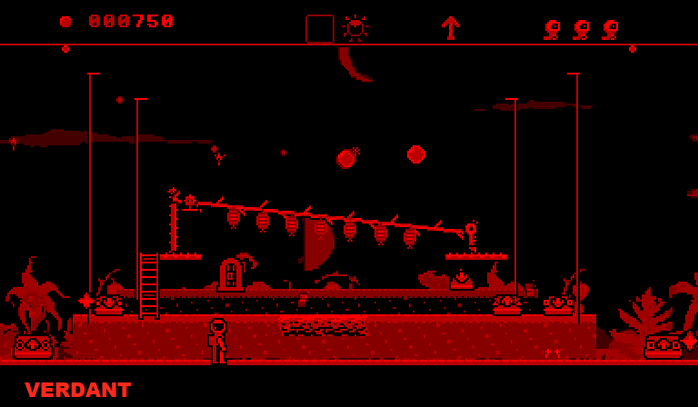
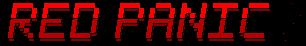
Fire a line straight up: every sphere it touches splits in two, smaller each time, until none is left.
A journey across eight planets toward the sun: five places on each, then a weightless crossing through space to the next.
Alone, or two players in CO-OP, by link cable or with a CPU partner.
The demo is built, and free: VERDANT, the first planet and its five places, then COMETS, the crossing that follows. Solo or CO-OP, with FEVER for both.
To join the closed beta, send a private message on Discord to @henzelince.
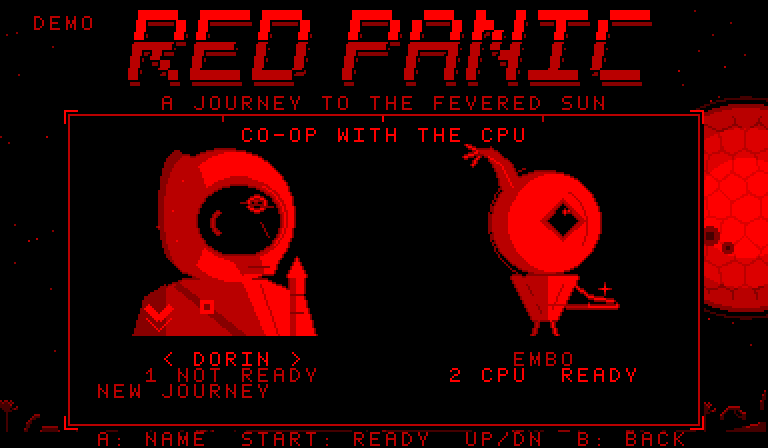
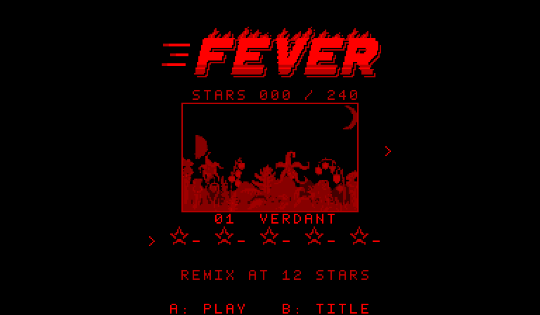
Each planet's fifth and richest place, in play. Emulator captures, left eye only; click to enlarge.
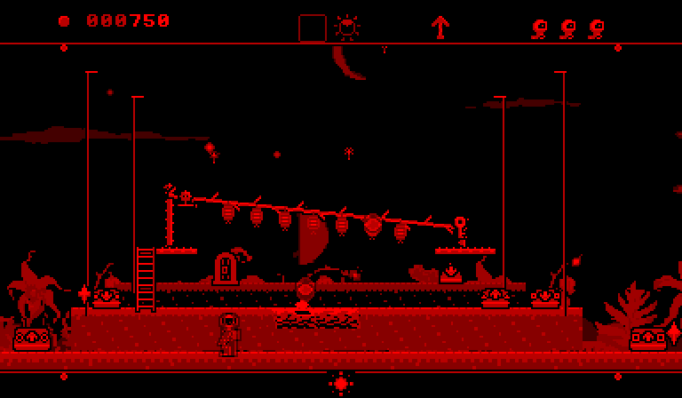
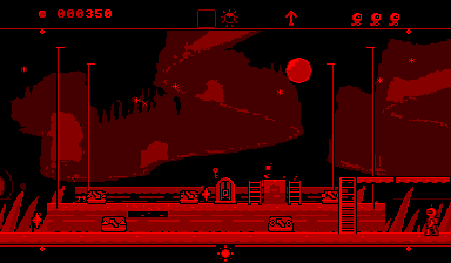
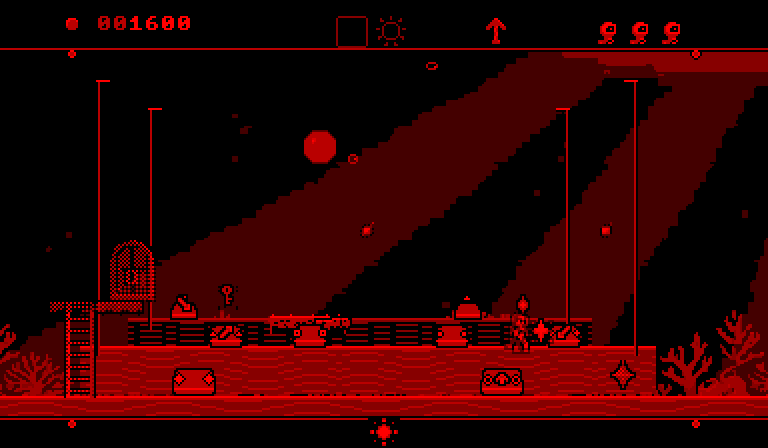
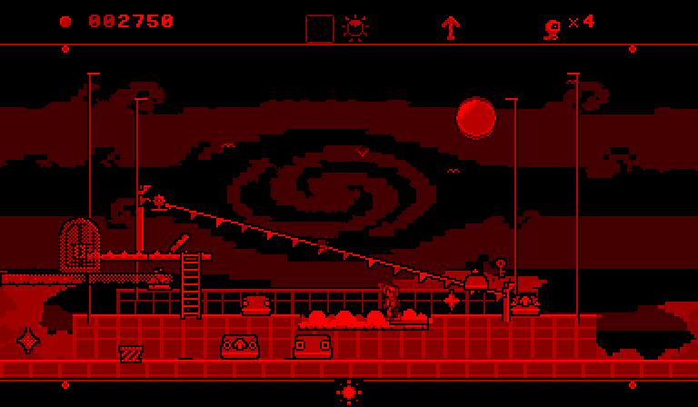
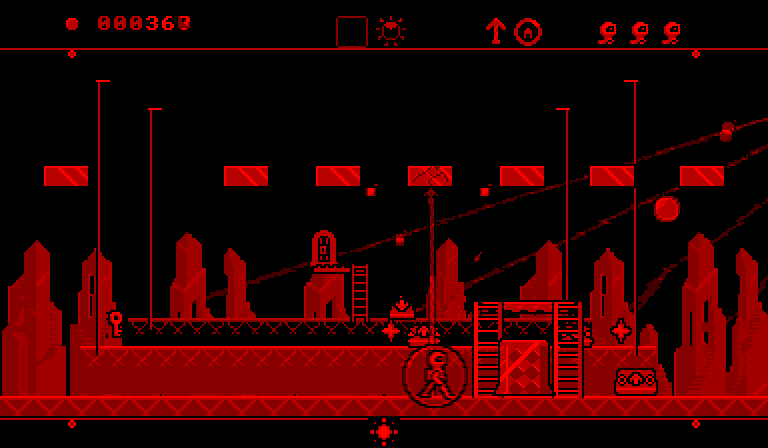
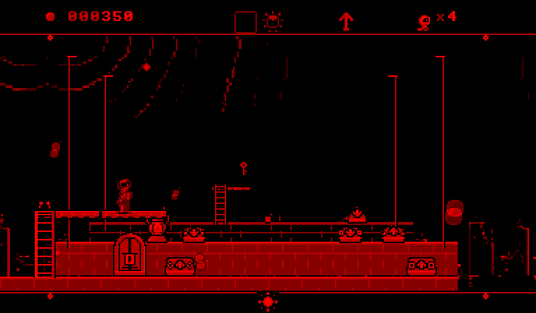
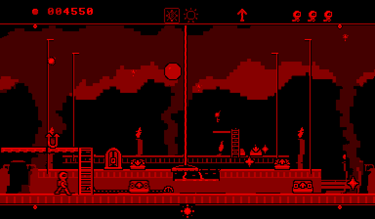
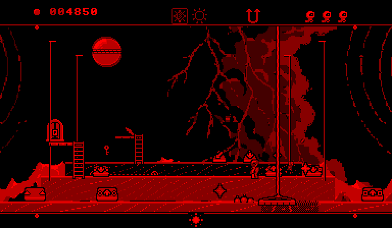
Every place of the game starts as a plan. The beta kit holds the plan of every place; you can redraw any of them and send it back. Every redraw is read, but none is promised a place in the game.
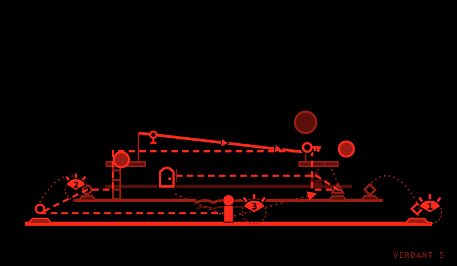
To join, send a private message on Discord to @henzelince. What the beta kit holds.
Places reach back into the screen, up to three planes deep. Pads launch you from one plane to another, and from a pad you can fire your line into the next plane.
Whatever stands in front of your plane turns see-through, so your pilot stays in view.
Eleven pieces, 45-second extracts recorded from the game's jukebox.